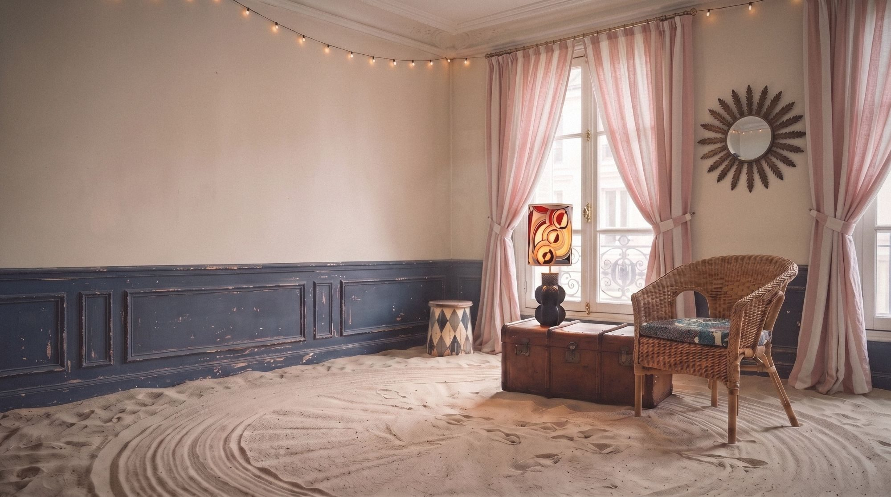

RotinBohème*
La plus belle vie des objets est parfois la deuxième.
Une troupe qui s'installe quelques jours chez toi, avec ses lampes, ses fauteuils et ses trouvailles. Texte provisoire.
Découvrir la boutiqueNouvelles trouvailles


Le salon de la troupe
Un salon qui a déjà beaucoup voyagé
Le sable du chapiteau, les rideaux rayés, les lumières d'une fête. Repère les pièces et fais ton choix. Texte provisoire.
Entrer dans la scène(12) Les membres de la troupe
- ColetteFrangeslampe, abat-jour fleuri

- LucienCantonlampe, porcelaine et soie orange

- LéaRaphialampe, pied de grès

- OctaveOrphistelampe, pied noir sculpté

- AgnèsJunglelampe, pied bleu nuit

- GastonPatchworklampe, tissus assemblés

- ZéliePointilléslampe, abat-jour blanc

- DoñaFrida Kfauteuil, rotin noir

- HonoréNaturelfauteuil, rotin et coussin fleuri

- LudovicSoleilmiroir, métal doré

- MireilleBarbotinepichet, raisins en relief

- LesCabanonskids, bientôtbientôt

L'atelier
« Fait avec les mains et le cœur. »
Bernadette chine des pieds de lampe et des meubles abîmés, puis les répare à la main sans effacer les marques du temps. Texte provisoire.
Faire connaissanceEntrer par la pièce


Des nouvelles de la troupe
Les nouvelles recrues et leurs histoires. Une lettre à la fois.